Uplift is your paragliding logbook that lives on your phone. Your data is stored in your own Google Drive — Uplift never stores anything on its own servers. It works offline and syncs automatically when you reconnect.
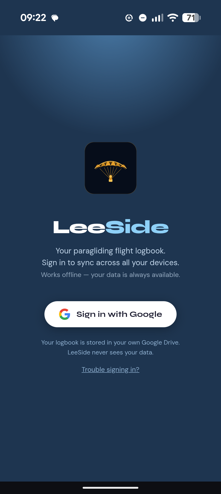
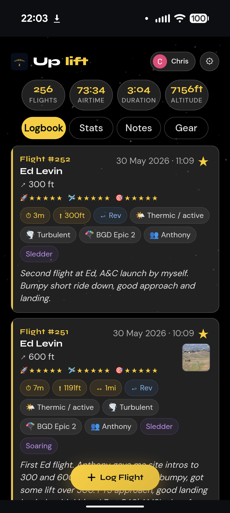
Tap the gold + Log Flight button to open the flight form. Everything is optional except the site name.
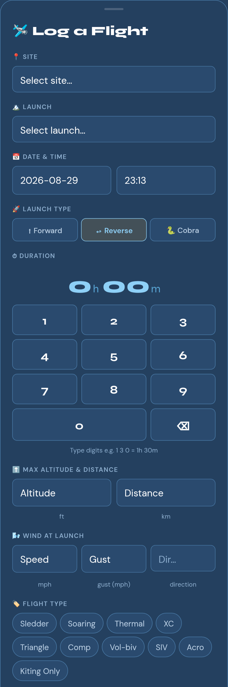
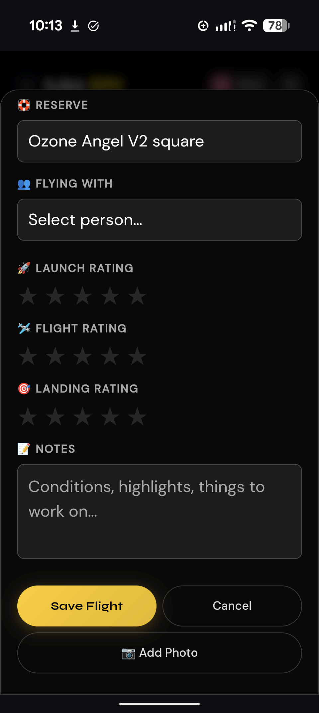
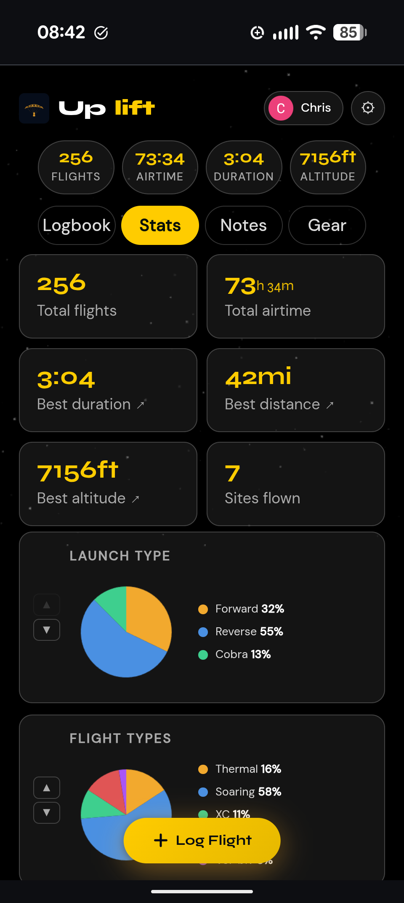
Notes list
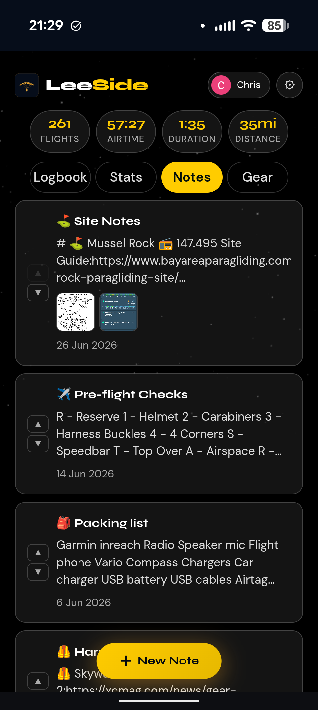
Note full view
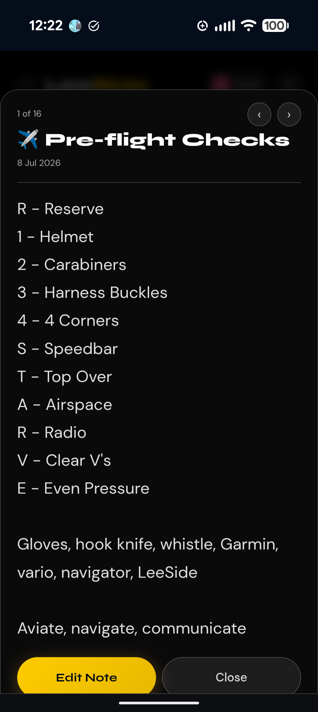
Gear list
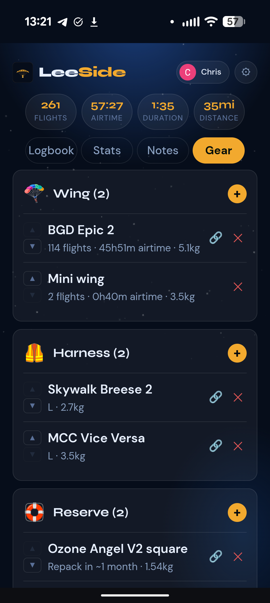
Reserve detail
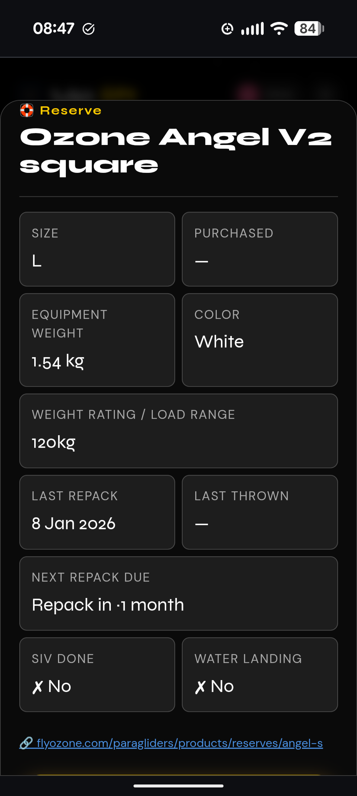
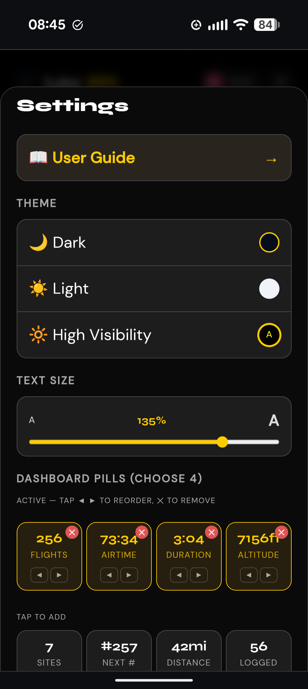
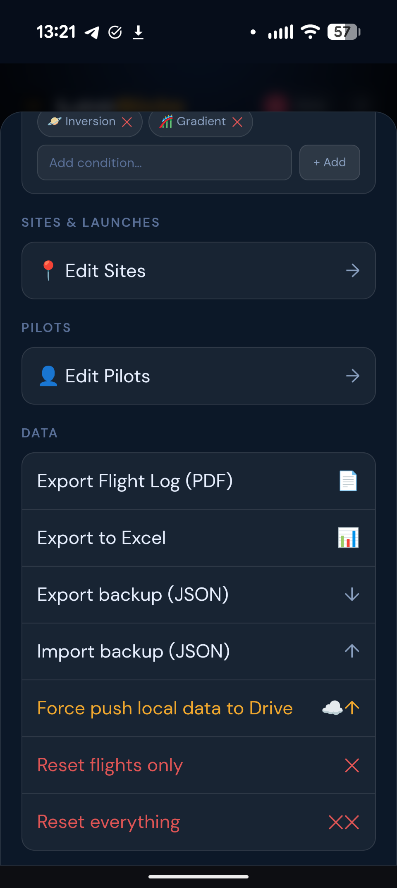